Las cinco dicen lo mismo: campo, recorrido propio, prueba antes de comprar y respaldo local. Todas usan la paleta y las tipografías del manual. Lo que cambia es la dirección de arte, que es lo que va a hacer que a MC se la reconozca y no se la confunda con las demás.
Portada de revista. Foto a sangre, titular enorme y mucho negro. La bici casi no se explica: se muestra.
Referencia: Canyon 2 / 5Fondo claro, todo a la vista y muy comercial. Precio, cuota y botón desde el primer scroll.
Referencia: Rad Power Bikes 3 / 5Verde monte, foto enmarcada y texto de reportaje. Se lee como una nota, no como una publicidad.
Referencia: registro de campo 4 / 5Naranja pleno, diagonales y bloques que alternan. La más ruidosa y la más joven de las cinco.
Referencia: Moustache 5 / 5Tarjetas redondeadas, pasos numerados y testimonios. La más amable y la que más tranquiliza al que paga.
Referencia: Pedego